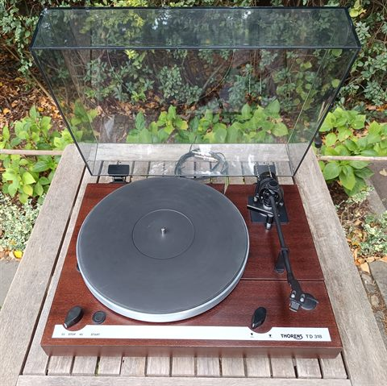
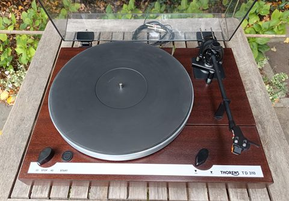
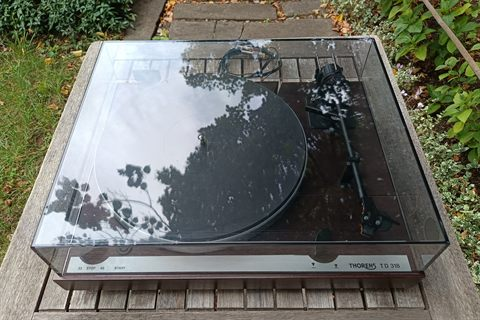
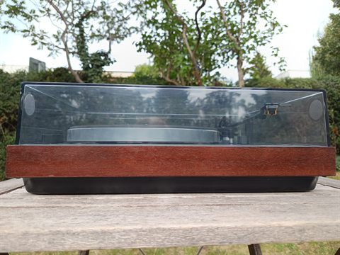
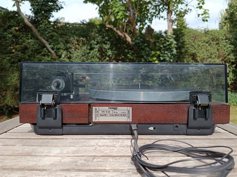
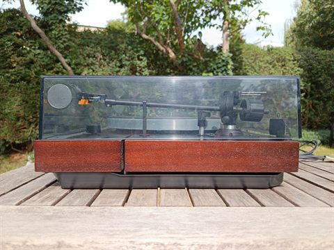
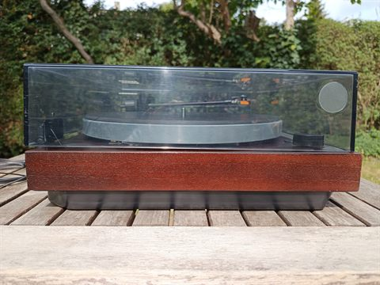
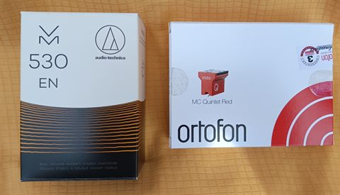

Prodám klasický gramofon švýcarské firmy Thorens. Gramofon byl vyroben v německém závodě firmy Thorens v roce 1988 a po celou dobu byl ve vlastnictví naší rodiny.
Špičkový stav, jedinou opravou byla výměna cinch konektorů, jinak je vše původní. Po servisu (vyčištěné ložisko, nový řemínek, seřízení rychlosti).
Cena 9 000 Kč.
V ceně je vložka Ortofon 2M Blue a původní Pickering 15/625E. Obě vložky jsou funkční, ale u vložky Pickering by bylo vhodné vyměnit jehlu - vzhledem ke stáří může zbytečně opotřebovávat desky.
Můžu také prodat s novou vložkou Audio-Technica VM530EN (celková cena 11 000 Kč) nebo s novou vložkou Ortofon MC Quintet Red (13 000 Kč).
Gramofon je možné vyzkoušet a převzít v Praze 6.
Kontakt: radomir.polivka@gmail.com







